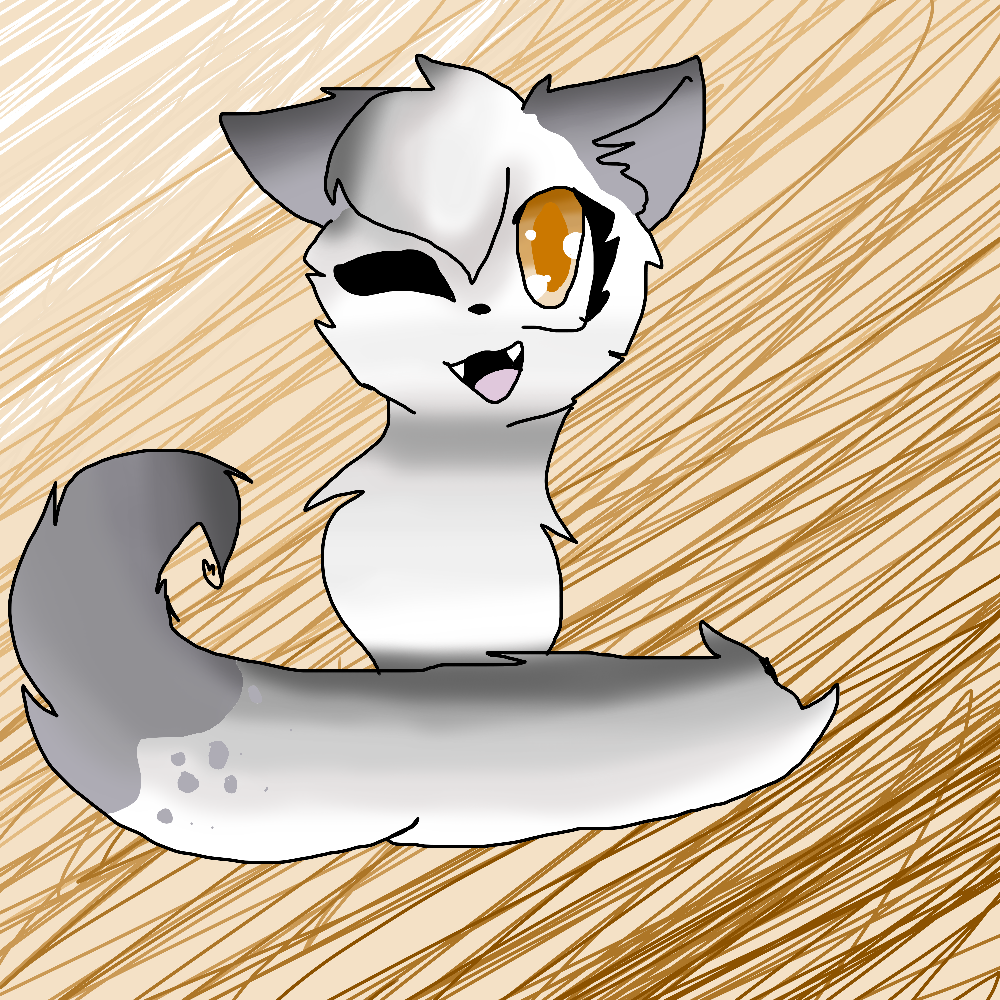

Ivypaw(wing)
Windclan
Ivypaw starts to speak and then suddenly gives a sneeze. The sneeze being high pitched. You almost give a sound of 'aww' but she begins speaking now.
IMAGE:

Ivywing~
Name:
Ivykit, Ivypaw, Ivywing
Gender:
Female
Appearance:
Ivywing is a lovely wispy she-cat. She has eyes the color of amber, but sometimes they turn a golden yellow depending on the light. Her fur is a sort of snow white with lavender ears, toes, and tail tip. To specify on her paws and legs, her legs are lavender up about halfway, then her paws are white halfway down, then her toes are lavender. This is the same for the other legs.
Personality:
Ivywing is a sweet girl. She is more of an innocent, submissive like cat. She has this certain flair though, and she'll reel you in if you are sort of her opposite. But despite it, she is like the positive in a magnet, her taste in toms the negtive type. Ones who use her. But she remains happy, despite her depression at night. She TRIES at least.
History:
Still developing. But know that the tom she is to be with is to use her. Or sort of i suppose
Rank:
Warrior
Clan:
Windclan
Links
Riverclan
Thunderclan
Windclan
Shadowclan